1 Power BI Introduction#
source: Course Emerick DUVAL EM Lyon
Objective
- The objective of this training is to give an :
Give the history of Power BI
Explain the main componenents
1.1 How Power BI was born ?#
1.1.1 The importance of Excel#
Excel is the most widely used data manipulation tool today
It is indeed the first application one thinks of when they need to analyze data
Its “Pivot Table” functionality is very popular with analysts
1.1.2 Excel and its add-ins#
Microsoft had the idea to allow Excel users to go further, whether in terms of data processing or visualization
- To do this, Microsoft has incorporated new features to Excel, in the form of add-in :
Power Query
Power Pivot
Power View
Power Map
The incorporation of these add-ins into Excel has given more power to the end users
Indeed, users have become capable of doing things that were previously reserved for more “technical” people
The goal is of course to make these tasks as accessible as possible to anyone
1.1.3 Power Query#
Power Query is a tool that allows users to connect, from Excel, to different data sources, thanks to a multitude of native connectors
You can also process the data (clean, filter, enrich, calculate) through an intuitive graphical interface
The query language “M” allows to go further in the transformations if necessary
Power Query is accessible from the “Data” tab, in the “Retrieve and transform” group
1.1.4 Power Pivot#
- Power Pivot is a tool for manipulating very, very large amounts of data with Excel
Initially, Excel is limited to a little over a million rows
- We can also:
Create relationships between different tables
Create measures according to specific calculation rules, KPIs
Establish hierarchies within tables
For the record, Microsoft bought a database using an “in memory” technology called Vertipaq
This later led to the creation of Power Pivot, the first Microsoft tool to use this database
- The Vertipaq database was then adapted to several applications, such as tabular cubes or Power BI
This is why there are many similarities between Power Pivot, Power BI and tabular SSAS cubes
- With Power Pivot, we create a data model in memory
It is a kind of cube integrated in the Excel workbook
- The data can then be analyzed using pivot tables connected to this data model
Analysts can then proceed with “ad-hoc” reporting
Power Pivot was introduced with Excel 2010, and natively integrated in Excel since its 2013 version, but it must be activated
1.1.5 Power Maps#
Power Map is a 3D visualization tool, allowing to represent data on geographic maps
It is also possible to set up animated presentations
Power Map was introduced with Excel 2013 (download), then natively integrated and renamed “3D Maps” since Excel 2016
1.1.6 Power View#
Power View is a tool for visualizing data by generating graphs, charts, maps and interactive visuals
These visuals are based on data stored in Excel files, whether they are pivot tables or tables stored in the Power Pivot model
Users can create all kinds of reports, using elements such as tables, 2D/3D graphics, text, etc.
The reports created are directly linked to the data, and therefore reflect the most recently loaded data in the file
- The report objects are interactive
A simple click on a value of a visual will allow you to perform a filter on this value on all other visuals of the report
1.1.7 Excel add-ins in brief#
- In sum:
Power Pivot allows you to create a cube in a few steps, without having to deal with the very daunting side of SSAS
Power Query allows you to retrieve data from different sources to feed the Power Pivot cube
Power View allows you to visualize data in a different way, in the form of a dashboard/report. Easy to use, and can be integrated with Excel or Sharepoint
A parallel can be drawn between Microsoft’s “classic” BI tools and Excel’s BI add-ins:
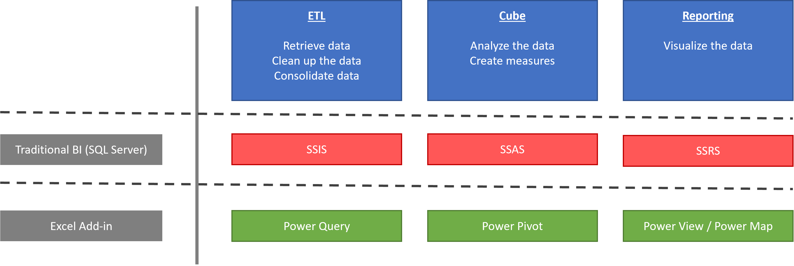1.2 What is Power BI?#
1.2.1 A range of products and services#
- Power BI is a suite of products and services:
Power BI Desktop
Desktop application
Allows you to import data, transform them, create reports …
- Power BI Online
Software as a Service (SaaS)
The reports are deployed there
Ability to create dashboards
- Power BI Mobile
Applications on smartphones and tablets
Allows you to view reports and dashboards
Image source: http://docs.microsoft.com
1.2.2 Power BI Desktop#
Power BI Desktop is an application that runs on Windows, totally detached and independent from Excel
It includes the functionalities of Power Query, Power Pivot, Power View and Power Map, under a different but very intuitive interface
Power BI Desktop allows you to combine the possibilities offered by all these add-ins into a single application purely dedicated to BI
- To summarize, with Power BI Desktop, you can:
Retrieve data from various sources
Transform this data to clean and consolidate it
Set up a data model that will store this data
Edit the links between the tables of the model
Create measures in the model
Design reports based on the data model
Implement data security rules
Power BI Desktop generates Power BI projects in .pbix format
- These files contain all the work done:
The data model
Transformations applied to data
Data (compressed)
Visualizations
These reports can be published on the Power BI Online service to be shared with the rest of the company
1.2.3 Power BI Online#
- Power BI Online is a set of cloud-based services
It is also called “Power BI Service”.
It publishes all the work that has been done on Power BI Desktop (data, transformations, reports, etc.)
- In Power BI Online, you can perform other tasks, such as:
Create dashboards
Share content between users
Create alerts
Manage data access
Refresh datasets used by reports
etc.
It is possible to design reports directly on the Power BI Online service
This is very useful for users who want to create new reports from existing datasets, without having to bother installing the Power BI Desktop application
- Note that the report creation interface on Power BI Online is almost identical to that of Power BI Desktop
There are some minor limitations compared to PBI Desktop
1.2.4 Power BI Mobile#
With Power BI Mobile, users can freely consume their reports from any device: laptop, smartphone, tablet…
There is also an “offline” functionality to allow the consumption of reports even without being connected to any network
Image source: http://docs.microsoft.com
1.2.5 Power BI additional components#
Power BI Desktop, Power BI Online and Power BI Mobile are the foundation of the Power BI suite
- Other elements are added to complete this suite, including:
Data gateways (Power BI Gateway)
Power BI Embedded
Custom visuals (AppSource)
Power BI Report Server
- Power BI Gateways
Gateways that allow Power BI Service to connect to data sources that are not in the cloud (on-premises)
The data gateway is installed on the server that has the data to feed the deployed reports
- Power BI Embedded
Use of reports / dashboards in third party applications
Same principle as when you want to integrate a Youtube video in a web page or an application (generated code, to be integrated in the application)
- Customized visuals from the AppSource
A “marketplace” with a whole collection of complementary visuals, developed by Microsoft and third-party developer partners
- Power BI Report Server
A version of Power BI that uses a local report server
It is an alternative for companies who do not wish to use the cloud
Please note that many features of Power BI features are not available in this “local” version.
1.2.6 The Q&A feature#
- A very interesting feature of Power BI is called Q&A
Questions & Answers
It allows you to ask questions in natural language, and to be offered a set of answers in the form of adapted visuals
To do this, Power BI analyzes the words used in the question, and tries to understand what they refer to in relation to the model
Q&A functionality is available on dashboards and in reports on Power BI Online
Q&A for dashboard

Q&A for report

- For the moment, Q&A only supports questions asked in English.
The Spanish language is available in pre-release


To get the most out of the Q&A feature, make sure you have a good data model with relevant table, column and measure names
- At the data model level, it is possible to define synonyms, to help the Q&A functionality
For example: SalesAmount = Revenue, Item = Product, etc.
The functionality is interactive, and above all very fast, thanks to the storage in memory (almost instantaneous answers)
1.2.7 Summary#
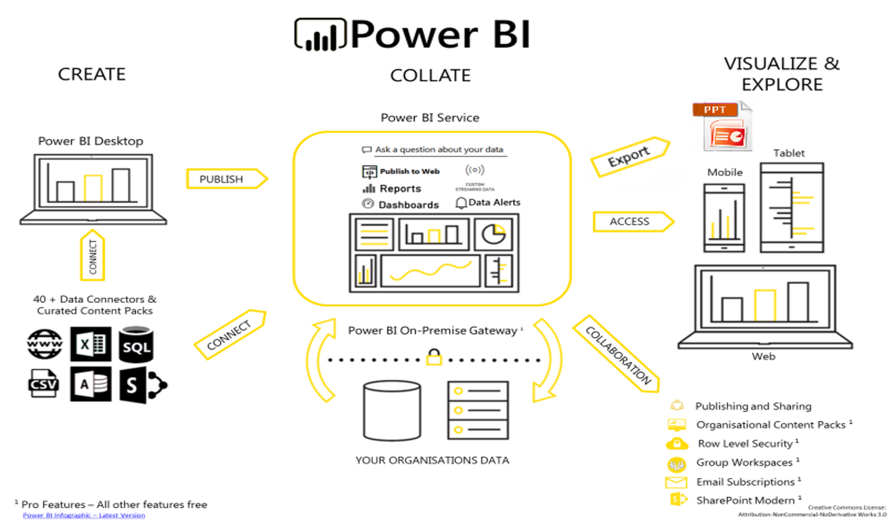1.2.8 Comparison with Microsoft BI Suite#
To continue the comparison with the MS BI suite:
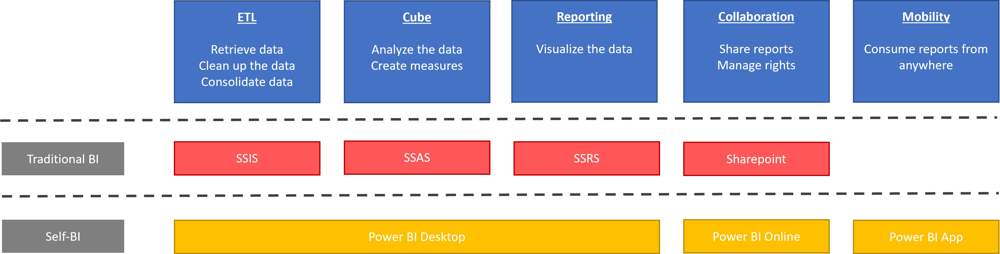1.2.9 Regular updates#
The first standalone version of Power BI was released in July 2015
- The product has evolved a lot since then, and for good reason: Power BI has a new release every month
Each release includes new features on Power BI Desktop, Power BI service, etc.
To see the history of the evolutions
1.3 Declination of the Power BI offer#
1.3.1 Free version of Power BI#
The free version of Power BI is quite limited, but allows you to get a feel for the tool
- The following features are available:
10 GB of storage on the Power BI service
Daily data refresh
Ability to connect to multiple sources (on-premises / cloud)
Publish on the web
But in a corporate context, the free version quickly shows its limitations, such as the impossibility to share reports for example
1.3.2 The different offers#
Microsoft offers a set of paid packages for using Power BI in an enterprise context
- The paid offer is broken down as follows:
- Power BI Pro:
Personal license
- Power BI Premium (per capacity) :
Licensing at the corporate level (not at the individual level)
Many additional features
- Power BI Premium Per User (PPU):
Almost identical features to Premium by capacity…
… but with per-user billing
Image source: http://docs.microsoft.com
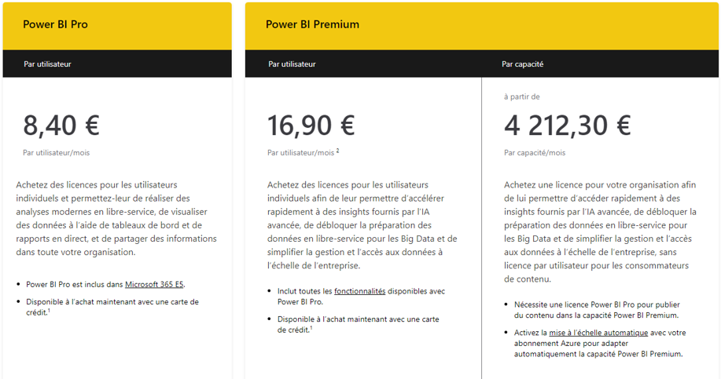1.3.3 Power BI Pro#
- In the free version, reports cannot be shared
They can only be published on the Power BI service
- The Pro license allows you to share published reports with other users who also have a Pro license
A Pro user can share his report with a free user…
… but the latter will be denied access when it accesses the URL
It therefore seems complicated to use Power BI in a company while remaining in the free version
Moreover, the Pro version allows you to go a little further than the free version in terms of capacity and features
- With notably :
10GB of storage per user
With a maximum size per dataset of 1GB
Shared datasets
Email subscriptions
Workspaces
Analyze in Excel
1.3.6 Comparison of offers#
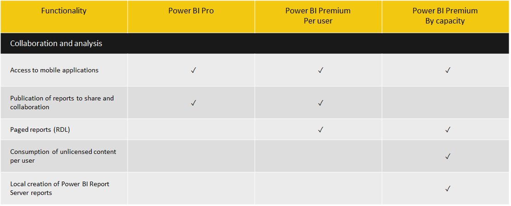 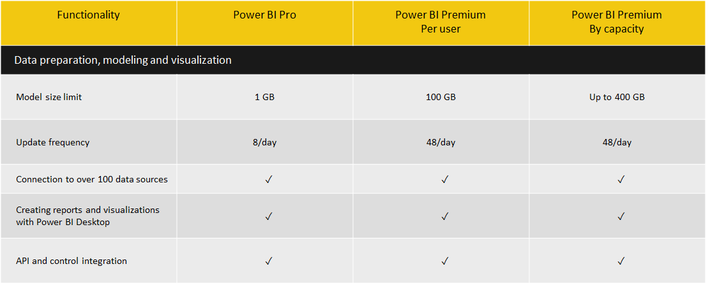 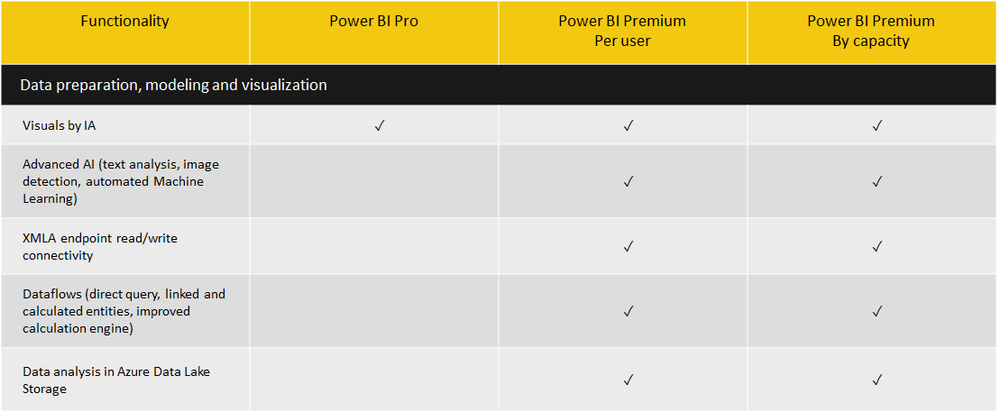 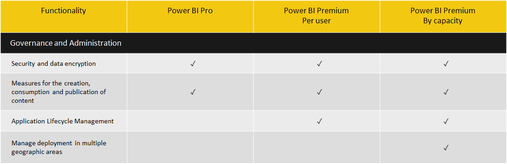 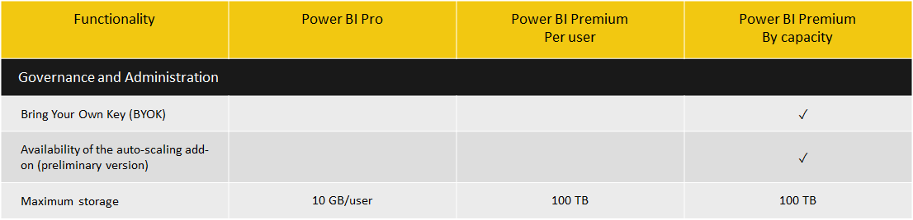1.4 Power BI Report Server#
1.4.1 Presentation: Power BI … without the cloud#
When we talk about Power BI, we immediately think “cloud”.
However, Microsoft has introduced an on-premises version of Power BI, called Power BI Report Server
Unlike Power BI Service, which is a cloud-based analytics platform hosted by Microsoft, Power BI Report Server is a product that is installed and configured on a dedicated enterprise server
Image source: http://docs.microsoft.com
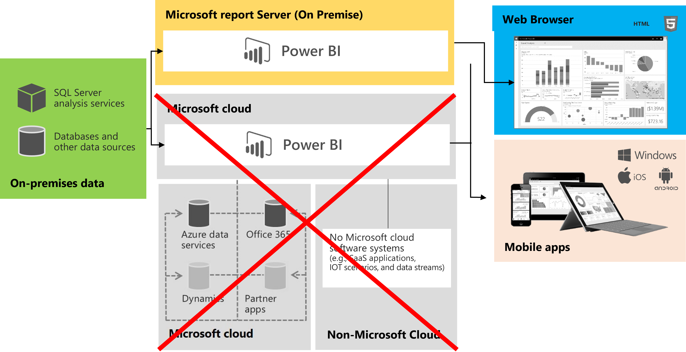1.4.2 From SSRS to Power BI Report Server#
- Power BI Report Server is a product based on the SQL Server Reporting Services (SSRS) framework of the Microsoft BI Suite
It is therefore possible to deploy SSRS reports on it
This also means that you can easily migrate from an SSRS implementation to Power BI Report Server
1.4.3 Operation#
Once Power BI Report Server is installed on an enterprise server, it can be used to publish reports built on Power BI Desktop to the server for sharing
These reports become accessible to all the company’s consumers, without sending the data outside
Note: any user wishing to publish a report on Report Server must have a Pro licence
- Thus, it is possible to have 10 report authors, but only one of them has a Pro
The latter will be able to retrieve the .pbix files of his colleagues and publish them himself
- Power BI Report Server is available under two different licenses:
Power BI Premium
SQL Server Enterprise (with Software Assurance option)
The advantage of using the Power BI Premium license is that it allows for a hybrid deployment, combining cloud and local resources
If the company really does not want to use a cloud solution, it will turn to the SQL Server Enterprise license
1.4.4 An improved SSRS#
- The Power BI Report Server portal is an enhanced SQL Server Reporting Services portal, allowing you to :
Create directories to organize reports
Create and integrate key performance indicators (KPI)
View Power BI reports, mobile reports
View paged reports (SSRS)
Manage shared data sources and datasets
On Power BI Report Server, we are basically on a Reporting Services (SSRS) server, with the ability, in addition, to drop Power BI content inside
The interface is really the same as the SQL Server Reporting Services portal
It is very different from the “normal” Power BI interface
Image source: http://docs.microsoft.com
1.4.5 The interface#
{kind=link}
1.4.6 Interface comparison#
Report Server Portal
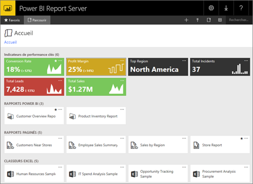{kind=link}
Power BI Online Portal
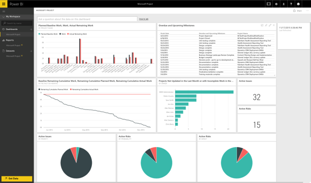{kind=link}
1.4.7 Interface customization#
As with Reporting Services, it is possible to customize the interface of Power BI Report Server
This is very interesting for companies that often want to have a portal that “looks like” them
However, you can’t change the layout of the elements… so it’s quite limited
Example of customization
This results in:
1.4.8 Limitations of Power BI Report Server#
- Life Cycle:
4 updates per year for Report Server, compared to monthly updates for the cloud version
To benefit from the latest features (which are not necessarily identical to the Cloud version), you must reinstall the server every 3 months
The support for each version (critical updates, security updates) only lasts for one year, i.e. after this period, it is necessary to upgrade to a more recent version, otherwise the solution will be vulnerable
Image source: http://docs.microsoft.com
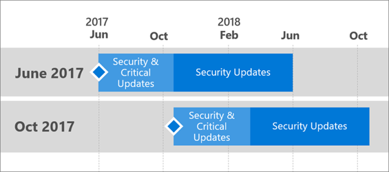{kind=link}
- Security:
Security groups have no effect in Report Server
Data access must be secured at the source level
- Dashboards:
Unable to create dashboards on the Report Server version
- Power BI Report Server does not support :
The Q&A feature
Workspaces
The datasets